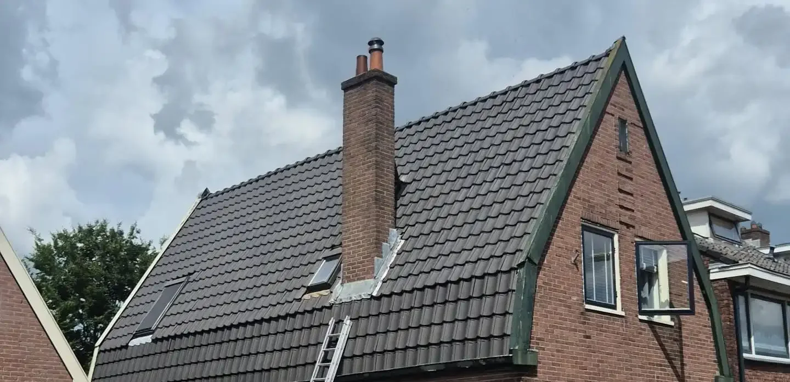
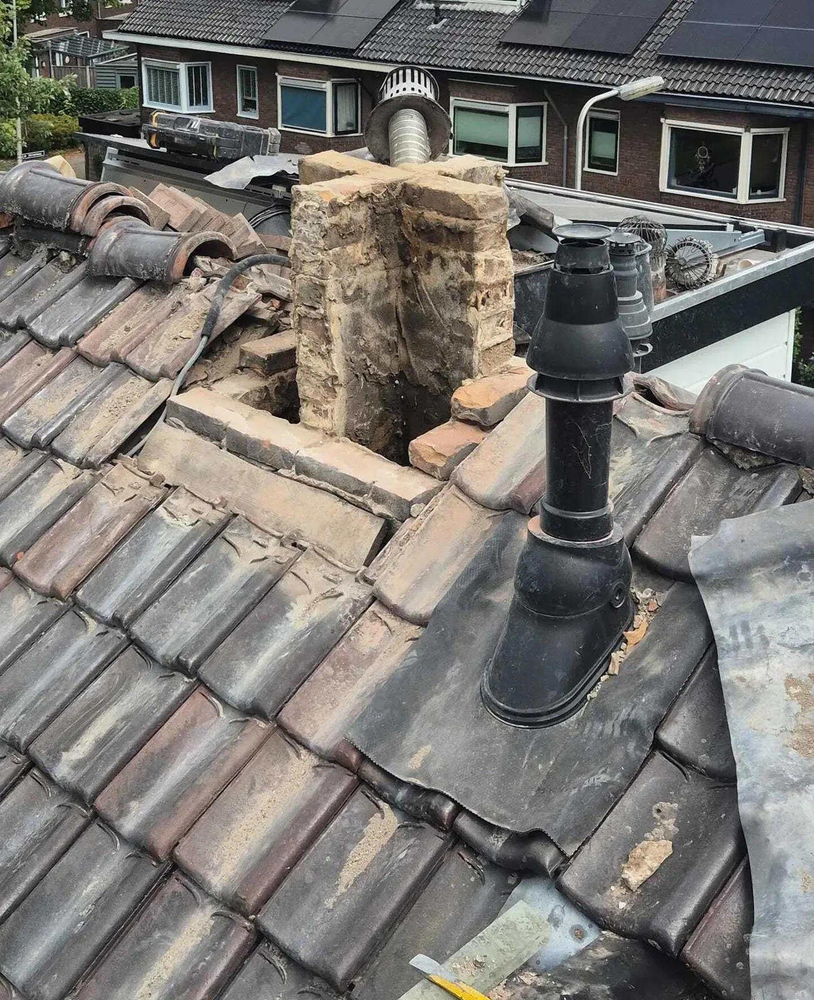
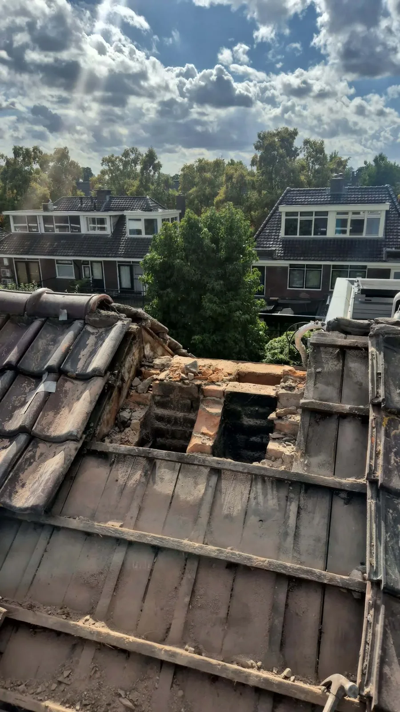

Cluster 7
Schoorsteen verwijderen
Een thematische kennisbanksectie met een pillarpagina en ondersteunende artikelen. Begin bij de hoofdpagina voor overzicht, of kies direct het specifieke onderwerp dat past bij uw situatie.

Artikelen in dit cluster
De pillar pagina geeft het overzicht. De ondersteunende blogs behandelen deelvragen, signalen, kosten, risico's en praktische keuzes.

Lekkage door schoorsteen: herstellen of verwijderen?Ondersteunende blog
Schoorsteen afdichten in plaats van verwijderen: wanneer is dat verstandig?Ondersteunende blog Schoorsteen verwijderen tot dakniveau: wanneer is dat voldoende?Ondersteunende blog
Schoorsteen verwijderen: wat je moet wetenPillar pagina
Schoorsteen verwijderen tot dakniveau: wanneer is dat voldoende?Ondersteunende blog
Schoorsteen verwijderen: wat je moet wetenPillar pagina

Schoorsteen verwijderen: wat kost dat precies?Ondersteunende blog Vergunning nodig voor schoorsteen verwijderen?Ondersteunende blog
Vergunning nodig voor schoorsteen verwijderen?Ondersteunende blog
 Zelf schoorsteen verwijderen of uitbesteden?Ondersteunende blog
Zelf schoorsteen verwijderen of uitbesteden?Ondersteunende blog